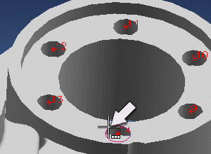
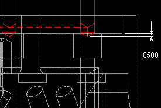
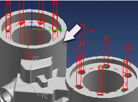

Optimize the tool path and generate it
You need to optimize the tool path to achieve the most efficient motion.
-
In the Point dialog box, click Optimize.
-
Click Shortest Path.
-
Click Start Point-Automatic.
-
Select the hole shown as the automatic start point.

-
Click Optimize.
-
Click Accept.
-
In the Point dialog box, click Planning Complete.
You will specify a tool tip depth of .0500.

-
In the Spot Drilling dialog box, in the Cycle Type group, click Edit parameters
 .
.
-
In the Specify Number of dialog box, accept the default of 1 set and click OK.
-
In the Cycle Parameters dialog box, click Depth (Tip).
-
Click Tool Tip Depth.
-
In the Depth box, type 0.05 and click OK.
The Cycle Parameters dialog box should reflect the tool tip depth.
-
Click OK.
-
In the Spot Drilling dialog box, in the Actions group, click Generate
 .
.
The tool collides with the part when traversing between the two areas.
